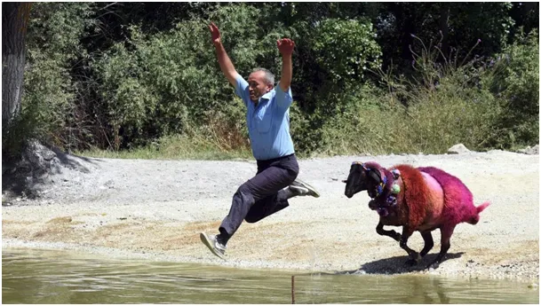
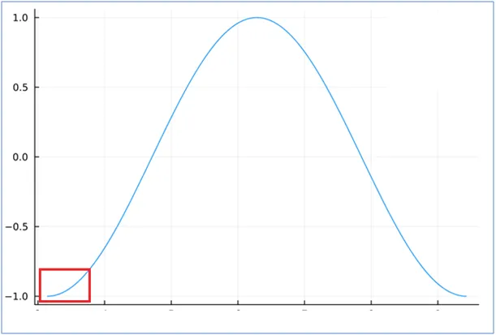
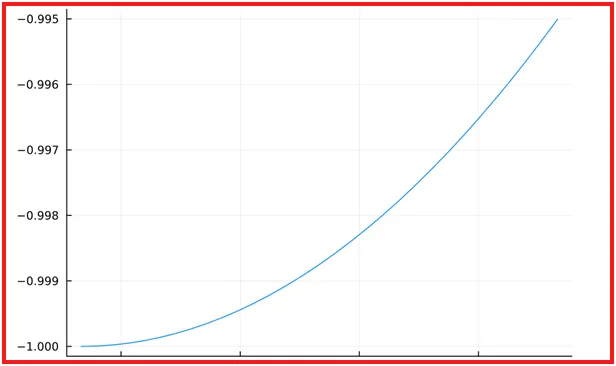

Na Nowy Rok o barani skok
"Na Nowy Rok o barani skok", tyle przysłowie o długości dnia w grudniu. Są spory, czy ten skok jest długi, czy bardzo krótki. Przypominam, zachód Słońca jest już od 13. grudnia, co dzień o minutkę później. Niewierzących odsyłam do wpisu z 13. grudnia.

Za odczucie, że niewiele się zmienia odpowiada sinusoida. Wszystko, co wiruje itp. w matematyce opisane jest funkcją sinus lub cosinus. Gdy ta funkcja przechodzi przez swoje minimum i maksimum (góra, dół) staje się dosłownie leniwa.


Mimo, że cały rok faluje, to w tych punktach funkcja staje się prawie płaska. Na drugim rysunku powiększyłem kilka pierwszych tygodni od zimowego przesilenia. Czas płynie a wartości funkcji, czyli długość dnia prawie się nie zmienia. Za pól roku , w czerwcu będzie podobnie, dzień będzie bardzo długi i do początku lipca zmiany będą niezauważalne. Praktycznie już w Nowy Rok, jeśli zaświeci Słońce, poczujemy to, bo zmierzch przyjdzie już 10 minut później, niż 13 grudnia. Na kolejne 10 minut poczekamy już tylko 9 dni a nie 18 jak to było w grudniu, a na kolejne 10 minut już tylko 5 dni. Oznacza to, że o 16:00 nie będzie już ciemno a potem to już z górki, jak po sinusoidzie.
Paweł Klimczewski